Vista Alegre Pavilion / Terra Capobianco
PAVILION, SHOWROOM, HISTORIC PRESERVATION • SOCORRO, BRAZIL
The Farm, Fazenda Barreiro is located on the slopes of the Serrote mountains, the southernmoststretch of the Serra da Mantiqueira, in the municipality of Socorro/SP. Previously focused on horse breeding and later undergoing degradation due to the leasing of pastures for cattle raising, the farm has renewed activity and is definitely inserted in the context of the region'svocation, coffee production.
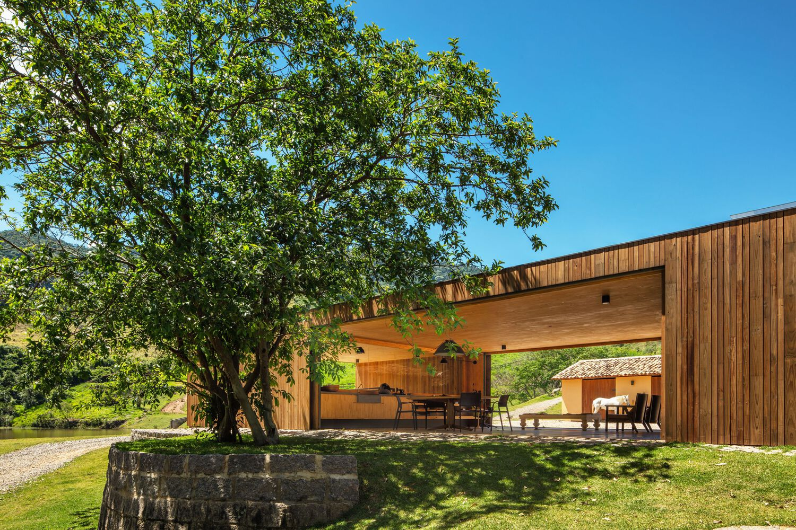The territory's regeneration process has been carried out with investments in production techniques that follow the criteria of organic and sustainable agriculture, and in the preservation of its water resources with native forest cover that has been expanded year after year, in partnership with NGOs specialized in forest regeneration. In the last two years, 40,000 seedlings of species native to the Atlantic Forest were planted on the property, transforming the farm into a reference for organic and low-carbon agriculture in the region.
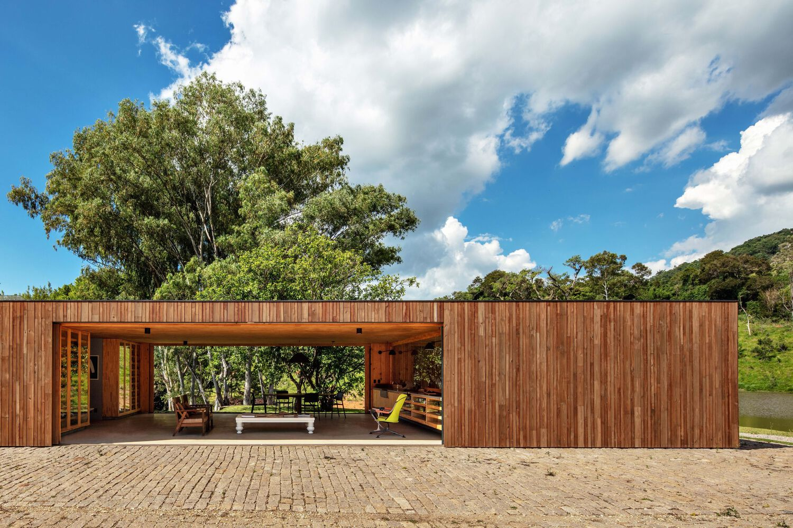 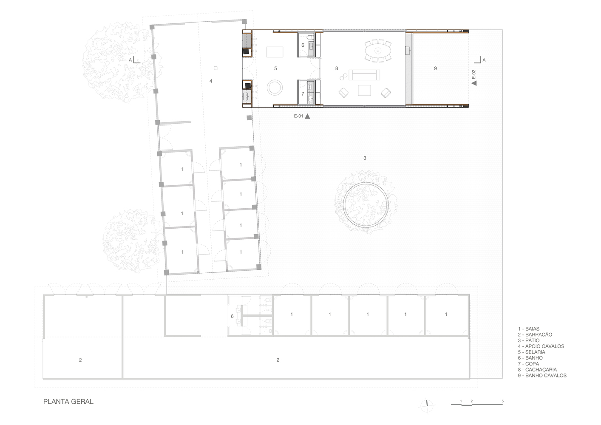 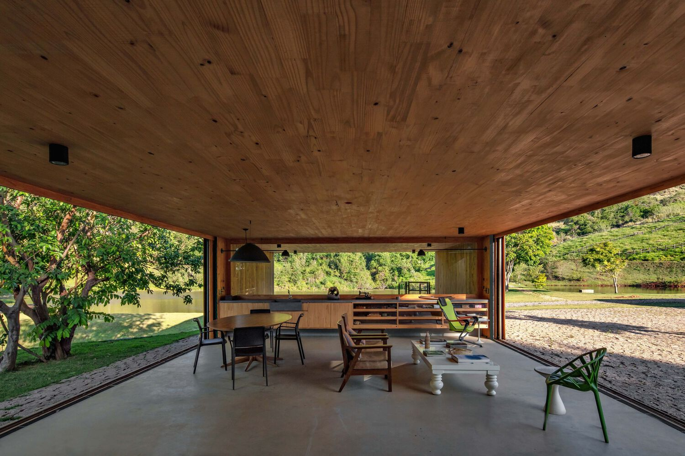In addition to the territory, the set of farm buildings has been remodeled to house the new functions, which mix recreational family use with coffee production. An example of this is the renovation of the old Haras Vista Alegre, in an effort to preserve the history of the place, the old and the new meet with the construction of a pavilion, which serves to receive visitors interested in coffee.
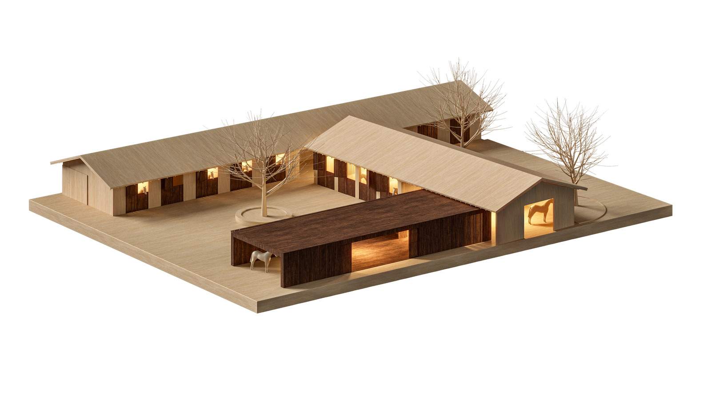The pavilion's structure is regular and precise, seeking to align the pre-existing constructions of the horse stalls. The proposal does not oppose the scale of what already existed, on the contrary, the intervention is discreet and reframes the set of buildings by creating a courtyard where the horse stalls converge. The counterpoint to the existing one is given by the new technology adopted for the construction, the CLT, Cross Laminated Timber (or Madeira Laminada Colada Cruzada, in Portuguese). The choice of construction system for the pavilion is based mainly on sustainability issues. CLT's raw material comes from forest planting, it is a carbon-neutral resource, as it stores carbon dioxide, generating a positive environmental impact.
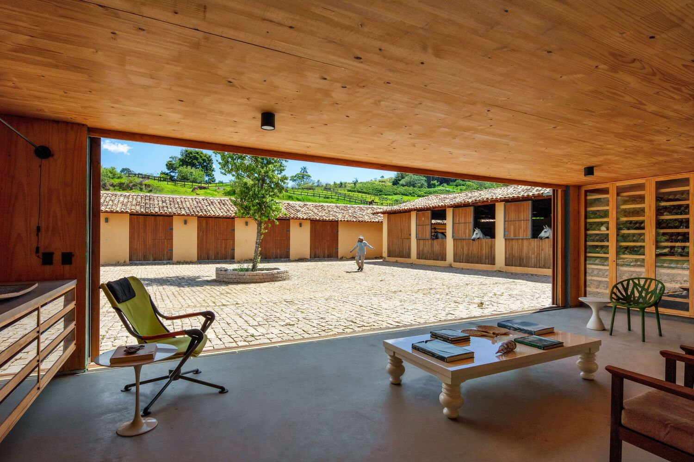 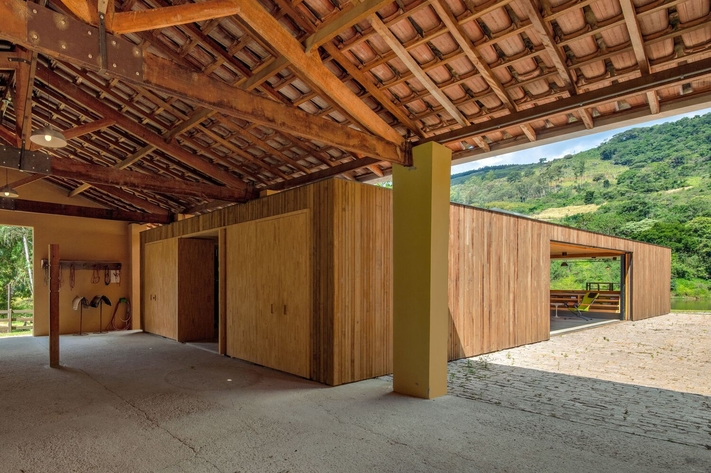The structural design for the building is based on the premise of constructive rationality, the option for the prefabricated solution reduces the amount of work to be carried out on-site, optimizing the overall duration of the work and not generating waste. The Pavilion has 170m2 and was built in 5 days. There were 9 CLT boards, 8 cm thick, forming a continuous roof plan 7.45 m wide and 22 m long. The plan is supported by inverted metal beams that discharge onto CLT walls. On the inside, the wooden structure is exposed, on the outside, the walls are lined with autoclaved and charred pine vertical slats, a treatment system that guarantees the durability of the wood. The same coating was applied to the doors and windows of the bays of the existing buildings, with the intention of bringing unity to the buildings.
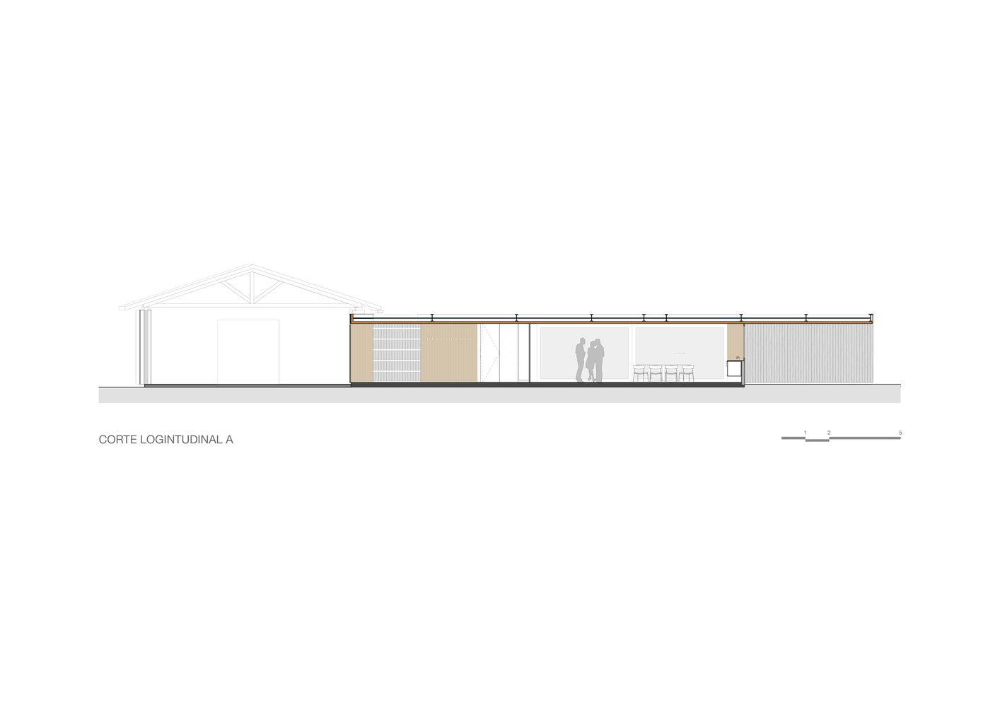The pavilion has a pantry and toilet, which are positioned to divide the saddlery's visitors' hall. To simplify the hydraulic installations, it was decided to build them in two masonry cores, also serving as a lock for the structure as a whole. In the saddlery, the harnesses are displayed on solid logs set in the CLT walls. Ventilation in this environment is crossed and permanent and takes place between the slats of the facades, through which natural light also permeates, resulting in an interesting effect of light and shadow.
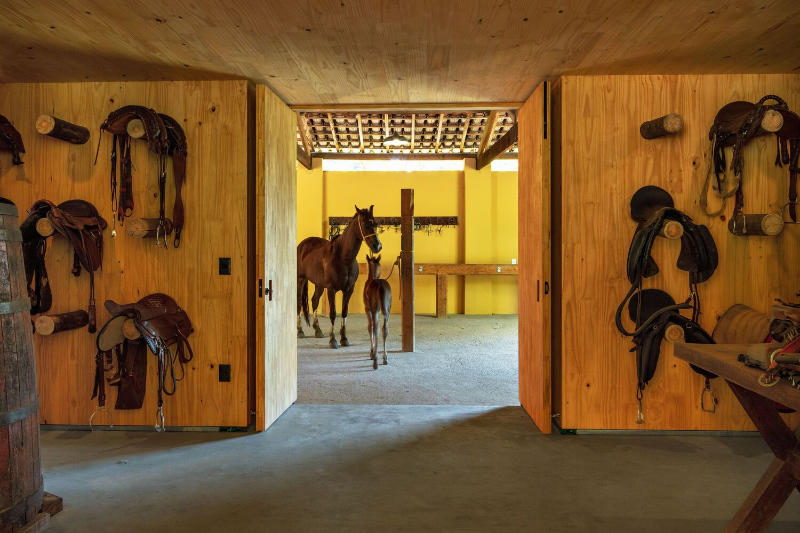 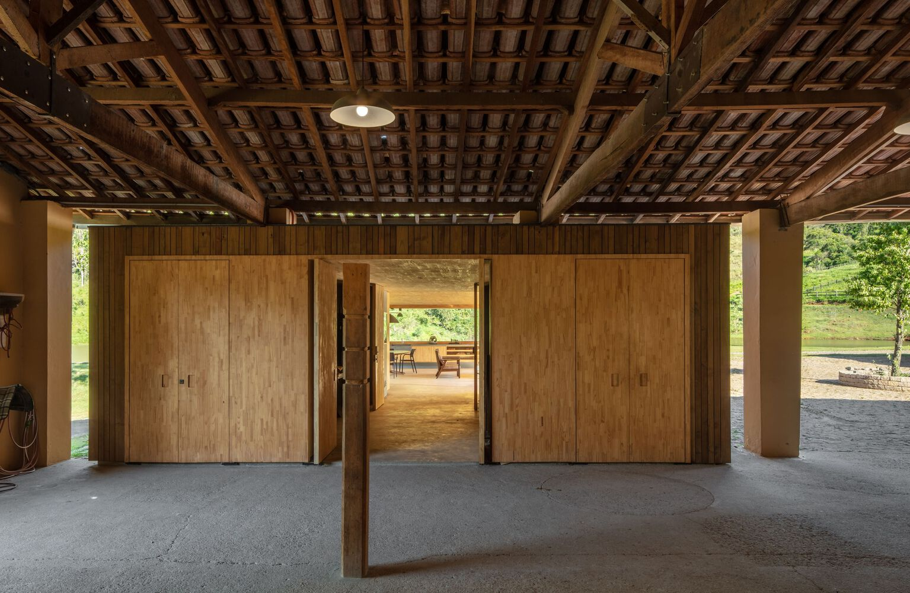In the main hall, a large basalt bench serves as a support for tasting the coffee produced on the farm, it is a place for meetings and rest from horseback riding. The view from the lounge overlooks the dams, a contemplative visual relationship through the large window on the bench. The side facades of the pavilion, in turn, open completely with sliding doors that are hidden between the CLT walls and the pine cladding, allowing integration on one side with the courtyard of the stalls, and on the other with the surroundings of the farm.
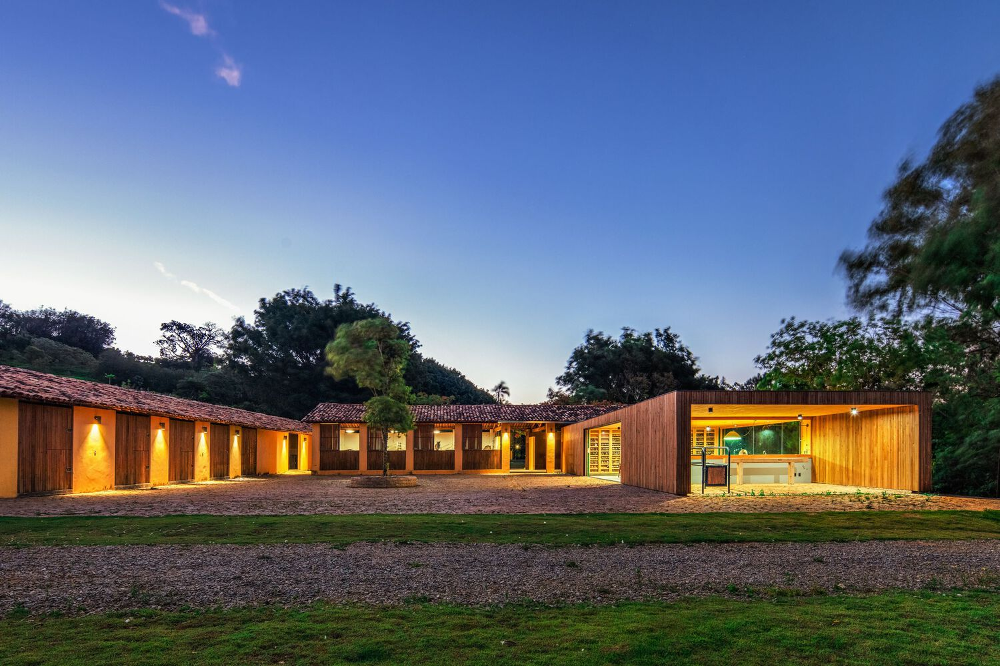